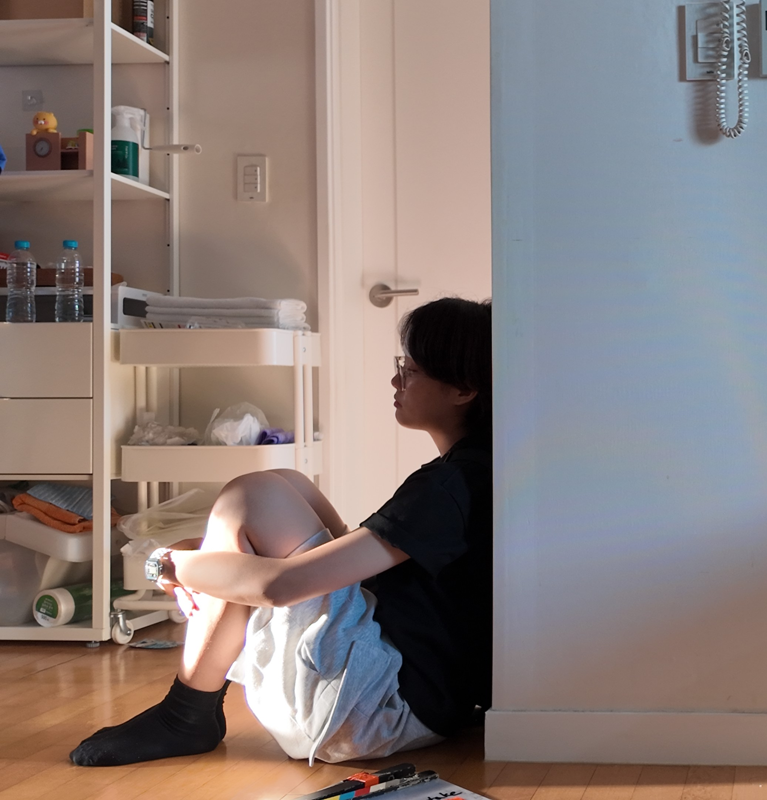
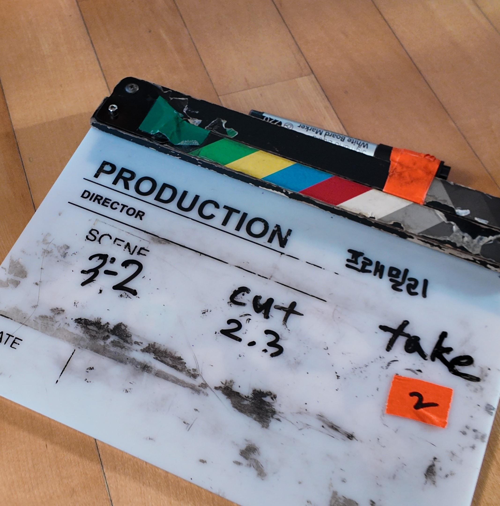
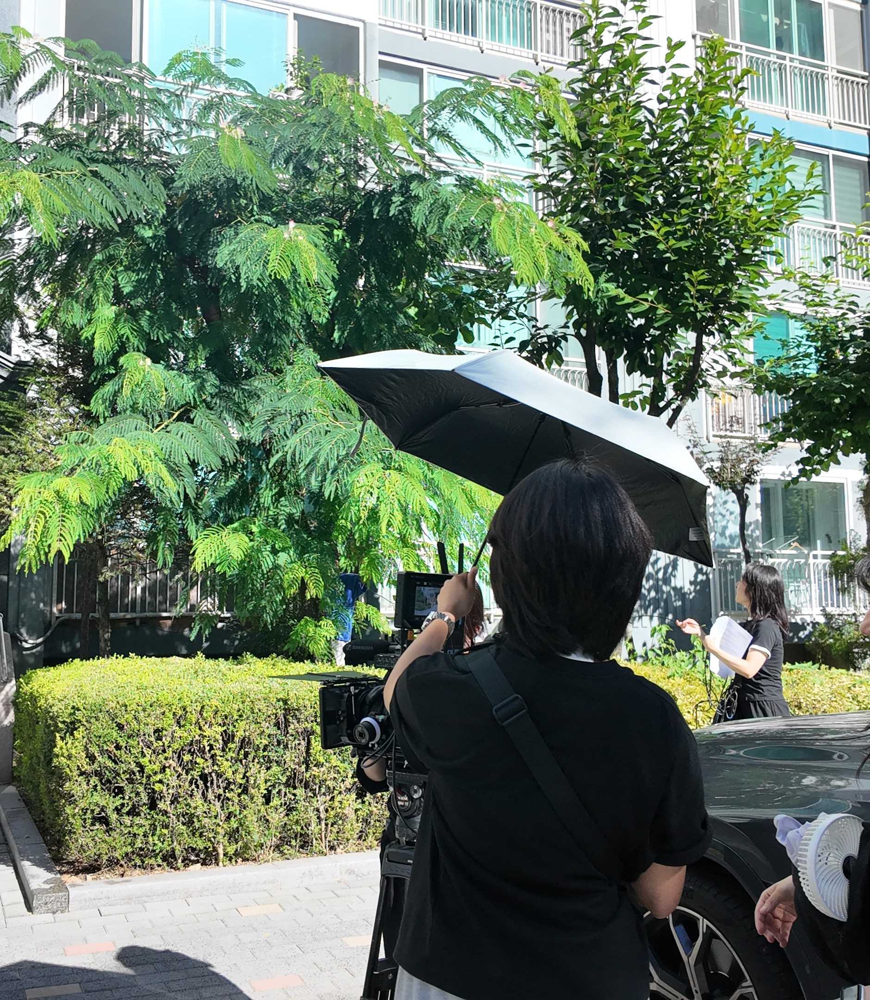

PROFILE
이아인은 누구인가요?
강렬한 목표의 인재


“세상에서 가장 냉소적인 사람도
눈물을 흘리게 만드는 작품”을 만드는 것을 목표로 가진 감독
“모든 사람은 각각 본연의 스토리와 장단점을 지닌다” 라는 가치관을 작품으로 녹여내고자 하는 영화감독 지망생, 이아인 입니다.
편안한 매력의 인재

세상을 남들보다 더욱 진지하고 다양한 시각으로 바라보고,
이를 가장 냉소적인 사람에게 마저 깊이 느껴지도록 밀도 높은 작품을 연출해내는 감독입니다.

진중한 작업물들
앞으로 인생을 살며 느끼게 될 더 다채로운 감정을 기대하는 마음을 담아내다.
포트폴리오엔 다양하되 강렬하고 한눈에 들어오는 시네마틱 색감들을 주로 사용했습니다. 또한 마음이 지친 관객도 편안하게 몰입할 수 있도록 레이아웃과 비주얼 타이포그래피를 진중하게 기획했습니다.